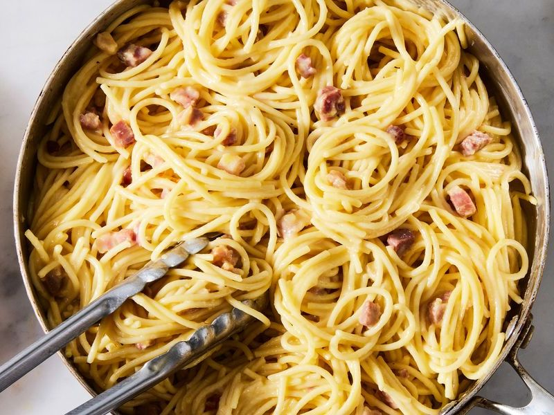

Pasta Carbonara

Description
Pasta Carbonara is a classic Italian dish known for its creamy, savory sauce made from eggs, cheese, pancetta, and pepper. Typically prepared with spaghetti, the dish features crispy pancetta mixed with a silky sauce made by combining raw eggs and grated Pecorino Romano or Parmesan cheese, which coats the hot pasta to create a rich, velvety texture without using cream. The dish is seasoned simply with freshly ground black pepper, allowing the flavors of the pancetta and cheese to shine through. It's a quick, flavorful meal that's both comforting and elegant.
Ingredients
-
12 ounces (340 grams) spaghetti or other long pasta (such as fettuccine or bucatini)
-
4 large eggs
-
1 cup (about 100 grams) grated Pecorino Romano cheese (or Parmesan, if preferred)
-
Freshly ground black pepper, to taste
-
Salt, to taste
-
8 ounces (225 grams) pancetta or guanciale, diced (can substitute with bacon if needed)
-
Extra grated Pecorino Romano cheese, for serving
-
Fresh parsley, chopped (optional, for garnish)
Steps
-
Boil Water: Bring a large pot of salted water to a boil. Add the pasta and cook according to the package instructions until al dente.
-
Prepare the Egg Mixture: In a medium bowl, whisk together the eggs, grated Pecorino Romano cheese, and a generous amount of freshly ground black pepper. Set aside.
-
Cook the Pancetta: While the pasta is cooking, heat a large skillet over medium heat. Add the diced pancetta and cook until crispy and the fat has rendered, about 5-7 minutes. If using bacon, follow the same process. Remove from heat.
-
Drain the Pasta: Reserve 1 cup of pasta cooking water, then drain the pasta.
-
Mix Pasta and Pancetta: Immediately add the hot pasta to the skillet with the pancetta, tossing to combine. The heat from the pasta will help melt the cheese in the sauce.
-
Add the Egg Mixture: Pour the egg and cheese mixture over the pasta, quickly tossing to coat the pasta. The heat from the pasta will cook the eggs gently, forming a creamy sauce. If the sauce is too thick, add some reserved pasta water, a little at a time, until you reach the desired consistency.
-
Season and Serve: Taste and season with more black pepper and salt, if needed. Serve immediately, garnished with extra grated Pecorino Romano cheese and chopped fresh parsley, if using.